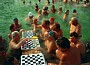
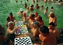

Wichtige Veranstaltungen in
Ungarn im Monat Dezember
Dezember:
Weihnachten
wird mit Christbaum und Geschenken gefeiert. Zum traditionellen
Weihnachtsessen gehören Karpfensuppe oder die
scharfe Szegediner Fischsuppe, Gefülltes Kraut und
auch Beigli, eine
Hefeteigrolle, die in Ungarn traditionell mit Walnuss oder
Mohn
gefüllt wird und die Ungarn meinen, das wäre eine
Nationalspeise.
Gefülltes Kraut bekommt man in türkischen Restaurants
in so vielen Varianten, die man in Ungarn überhaupt nicht
kennt und Beigli wird in Deutschland Mohn-, Nuß- oder
Schokoladenstollen genannt. Auch den Dresdren Baumkuchen haben die
Ungarn unter der Bezeichnung
"Kürtöskalács" zum Nationalkuchen erkoren
und stolzieren, das Rezept dazu hätten ihre Vorfahren aus den
asiatischen Steppen mitgebracht. Man bekommt den
"Kürtöskalács" an vielen
Weihnachtsmärkten, am Vörösmatrty
tér Platz in Budapest sogar an mehreren Ständen.
BUDAPESTER
WEIHNACHTSMARKT alljährlich
vom 1. Advent bis Weihnachten in Budapest
Am Vörösmarty
tér Platz
verkaufen Volkskunsthandwerker und
Designer ihre
Waren, die ausschließlich aus natürlichen
Materialien hergestellt
wurden. Lebkuchen,
Zimt und Glühwein schmecken bekannt und verleihen eine
festliche Weihnachtsstimmung,
wie in
Deutschland. Unsere
Erfahrung seit Jahren: Finger weg
vom wässrigen Glühwein, wenn
man nicht gerade von der Kälte geplagt ist, sonst
ist hier alles prima.
An
einigen Ständen bekommt man echte Köstlichkeiten aus
der
ungarischen Küche oder aus handwerklicher Produktion. Am
Grillstand wird neben Debrecziner und Wellwurst
(Leber- oder
Blutwurst, schärfer gewürzt als bei uns) auch
die Thüringer Bratwurst serviert. Wer
Süßigkeiten mag,
sollte die weltweit berühmte Konditoreikaffee Gerbaud im
eigenen
Prunkgebäude hier am
Vörösmarty Platz besuchen.
Wer
die ungarische Spezialität
"Kürtöskalács" angeblich aus der Urheimat
der
Magyaren
probieren möchte, sollte nicht meckern, wenn er
den Unterschied zum Baumkuchen
aus Deutschland nicht erkennt. Er
wird genauso zubereitet und es gibt ihn in ähnlich
großer Auswahl, wie bei uns. Wie
Kürtöskalács bzw. Baumkuchen zuhause
hergestellt wird, zeigt das Miele Kochstudio auf Ungarisch - siehe
Video in NOVEMBER
ADVENT
AN DER BASILIKA- alljährlich in der
Adventszeit in Budapest
Direkt vor der Basilika kann
man auf Kunsteis Schlittschuh laufen und wie unweit von hier am
Vörösmarty
tér Platz, auch hier gibt es
Basarstände, wo allerlei Volkunstprodukte
von Handwerkern selbst angeboten werden - vieles davon wird
direkt vor Ort am Stand hergestellt. Dabei sorgen gastronomische
Produkte, viele ungarische Spezialitäten für
die kleine Mahlzeit zwischendurch.
Im Hintergrund wird das Portal
der
Basilika mit verschiedenen Lichteffekten bestrahlt. Man kann es
stundenlang bestaunen, wenn man warm genug angezogen ist - notfalls
sorgen die Glühwein und Bratwurst für die notwendige
Wärme.
Oben ein Bild vom zweiten Adventsbasar im Jahre 2014. Es
bleibt zu hoffen, dass diese familienfreundliche
Veranstaltung mit einer künstlichen Eisbahn im Zentrum von
Budapest, direkt an der Basilika zu einem Dauerbrenner wird.
Bereits zwei Tage nach Weihnachten im Jahre 2014
war der Platz vor der Basilika so aufgeräumt, wie am Bild rechts.
ADVENT
- im
Schloss
von Gödöllő Mitte Dezember
Sissi-Schloss
WEINSALON
EGER -
seit
einigen Jahren ein
Wochenende vor Silvester in Eger
Egri Programmok
alljährlich
am 30.
Dezember um 19:00 Uhr im
Budapest Congress & Word Trade Center,
Jagelló
út Weg 1-3 in Budapest
Der Abend beginnt
bereits um 18 Uhr mit dem Auftritt von Volkstanzguppen und setzt sich
mit einer Weinverkostung und Präsentation
der Weinbauregionen Ungarns,
sowie Abendessen und dem
Konzert in zwei Teilen.
Im Repertoire der Musiker stehen Musikstücke von Offenbach,
Brahms,
Rossini, Chatschturjan, Liszt, Strauss und Werke der klassischen
ungarischen Volksmusik. Das Programm
>>>
Sie
wollen endlich einmal nach Budapest und suchen eine komfortable
Ferienwohnung, Ferienapartment oder Ferienzimmer, dann sind
Sie hier richtig. Wir vermieten 1-4-Zimmer Ferienwohnungen an
bis zu 8 Personen.


 



 Sie
wollen endlich einmal nach Budapest und suchen eine komfortable
Ferienwohnung, Ferienapartment oder Ferienzimmer,
Sie
wollen endlich einmal nach Budapest und suchen eine komfortable
Ferienwohnung, Ferienapartment oder Ferienzimmer,